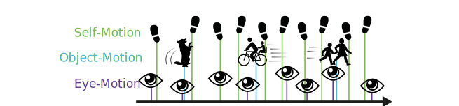
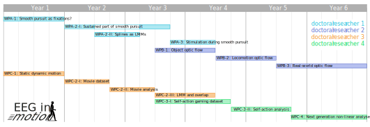

© S-CCS. Last modified: May 27, 2024. Website built with Franklin.jl and the Julia programming language.
In the Emmy Noether Group "EEG in motion", we will investigate self-, object- and eye-motion in combination with EEG. The project runs for 6 years, funded with 4 x 3.5 year positions by the DFG.

TLDR; In the real world many events happen at the same time, worse: everything is moving all the time. We develop solutions how to nevertheless investigate brain activity.
We want to develop and calibrate new algorithms as a foundation for (mobile) EEG in a highly dynamic real world.
For this we need:
A fundamental understanding of brain activity during smooth pursuit and while perceiving moving objects.
New algorithms to understand optic flow in self-motion, VR, and mobile EEG situations.
New algorithms, analyses, and concepts to analyze dynamic situations from video watching to computer gaming.
Multiple, large, open datasets, offering opportunities and challenges to the community.
New analysis toolboxes and simulation approaches to validate and calibrate non-linear EEG analyses.
Smooth pursuit is ubiquitous in unrestricted viewing situations with moving objects or self-motion. Often in self-motion, smooth pursuit (or vestibular-ocular reflex) is completely dominating over fixational periods. It is therefore surprising, that the brain potentials reflecting smooth pursuit have not been described before.
In this work package, we test the hypothesis that smooth pursuit acts functionally as pure gaze-stabilisation and leads to cortical processing effectively identical to fixations. We first establish that the initial part of the smooth pursuit brain response is identical to a mere fixation. We then will go further and propose a method, currently under development in our group, to model the ongoing smooth pursuit sustained response. In order to refine our spline-regression based method, we will further improve it on a purely computational level. Finally, we will show whether additional sudden stimulus onsets, on top of smooth pursuit behavior, elicits linearly overlapping brain activity, or whether there is an interaction between performing smooth pursuit and brain processing.
Whenever we move our bodies in space, or are moved in space, we experience optic flow. Optic flow is a fundamental feature of our world especially visible in e.g. sports, driving simulators, or VR experiments with movement. Foundational works on optic flow in EEG show a motion onset visual evoked potential that is critically influenced by motion strength and direction. But optic flow combined with eye movements has only been rarely investigated. In this work package we investigate which methods are needed to analyze moving objects and self-motion.
Optic flow is a strong indicator to estimate heading and speed, but it seems unlikely to be a strong predictor of object category alone. To use mobile EEG, we need to understand how to deal with the optic flow processing in the EEG. Should we try to account for it in our modelling, or can we ignore it for the typical event-based analyses?
We first start with object optic flow in laboratory settings. We then use a VR/EEG/eye-tracking combined experiment to investigate optic flow in real moving subjects. Finally, we go out into the real world with mobile EEG/ET to investigate optic flow during a trail walking task.
So far, we introduced smooth pursuit and optic flow. The next steps are to analyze a fully dynamic environment, consisting of dynamic motion and self-action. We start with a seemingly simple experiment, testing invariances of dynamic, but stationary self-motion (e.g. a tree moving in the wind). In parallel, we create a new open EEG/ET movie-watching dataset. Subsequently, we analyze this dataset with state-of-the-art encoding models. In the second period, we will develop new algorithms to leverage the potential of hierarchical models to model uncertainty in such uncontrolled dynamic situations. Similarly, we will introduce self-action by using computer games instead of passive movies. Finally, we will apply, benchmark, and compare multiple non-linear methods from the field of machine learning.
This is the workplan to provide an overview of the (non-binding, but useful) projects. 